Portfolio / Einblicke
Geschichten,
die man fühlt.
Ein Lachen, eine Umarmung, ein stiller Blick. Hier findet ihr ein paar Einblicke in besondere Momente – und in die Atmosphäre, die sie umgibt.
Die Bilder entdecken ↓
Für die großen und kleinen Augenblicke
Es sind die Menschen,
die einen Moment besonders machen.
Keine Geschichte gleicht der anderen. Manche Augenblicke sind voller Freude und Lachen, andere ganz leise. Genau diese Mischung macht sie so persönlich.
Menschen & Begegnungen

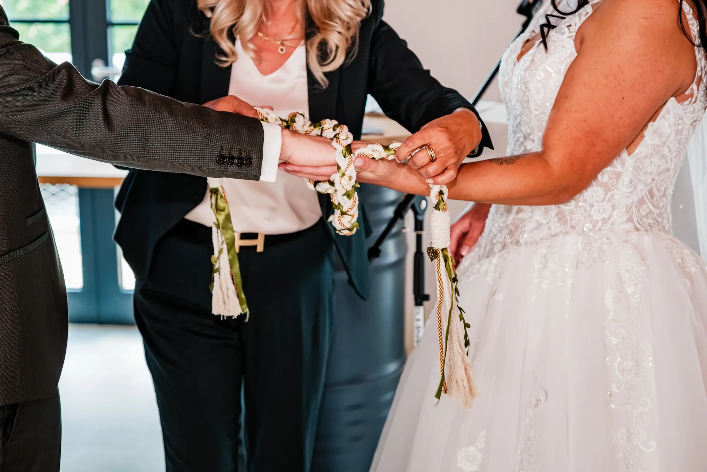
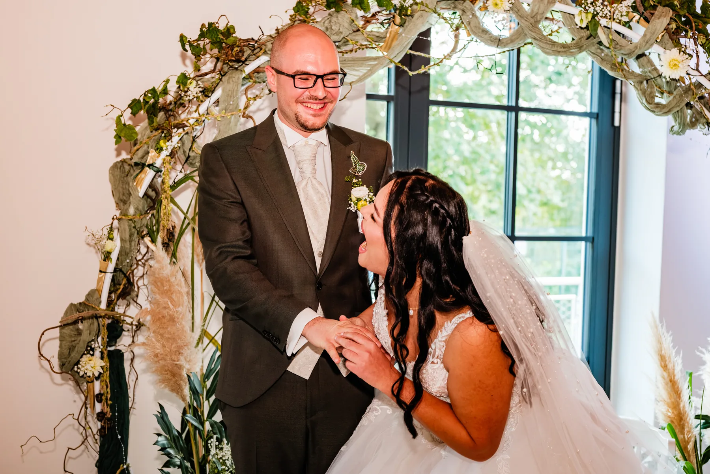

Eure Geschichte. Euer Moment.
Es darf gelacht werden.
Und alles andere auch.
Denn die schönsten Augenblicke entstehen, wenn ihr ganz ihr selbst sein könnt.
Orte & kleine Details
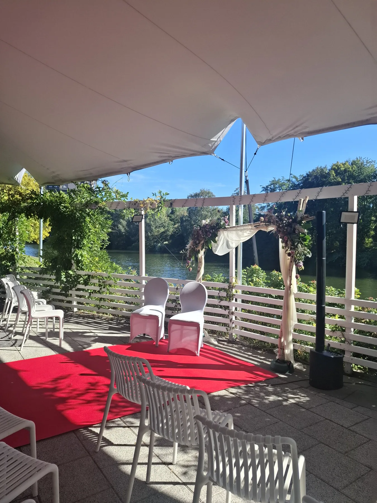
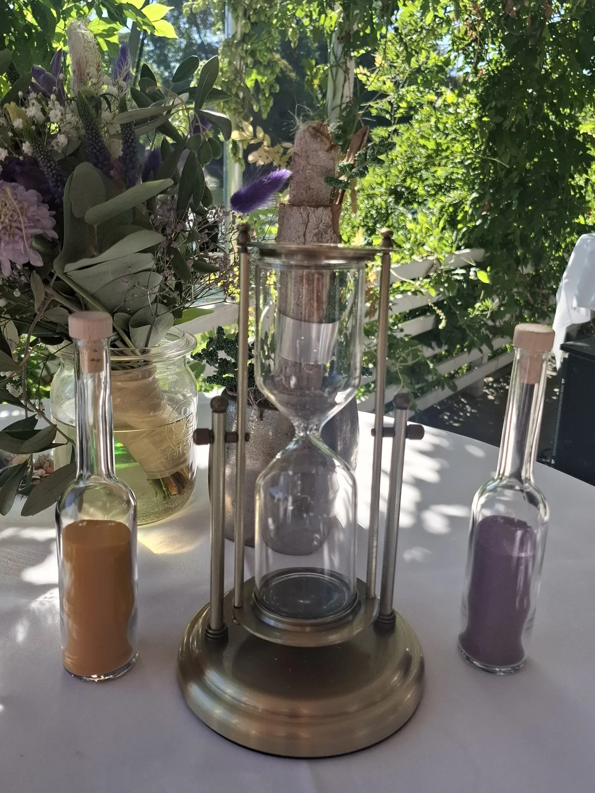
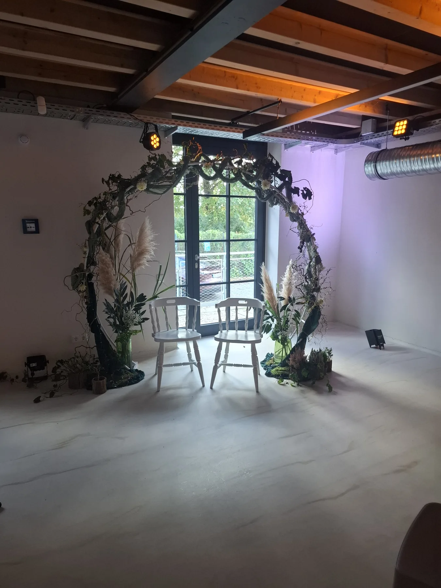
03 / Noch mehr Einblicke
Die kleinen Details.
Die großen Gefühle.
Einblicke in besondere Augenblicke, persönliche Begegnungen und Orte, an denen Erinnerungen entstehen.

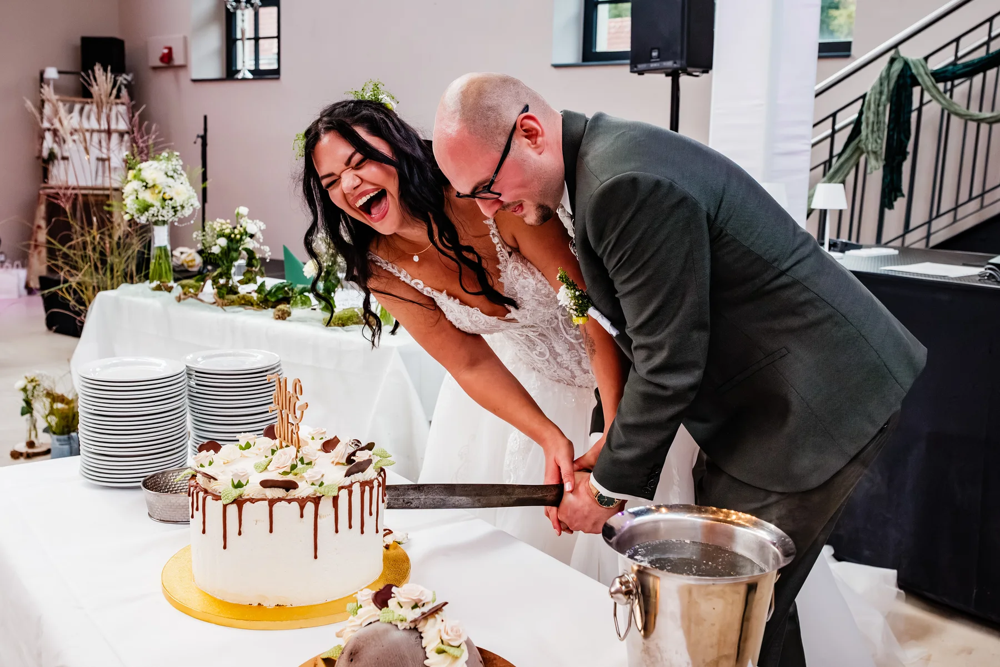
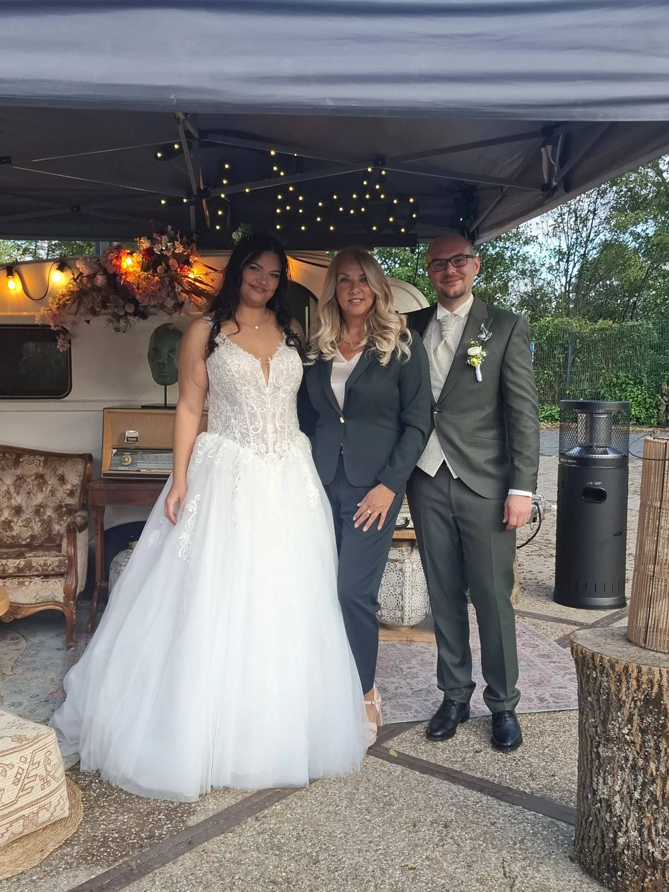
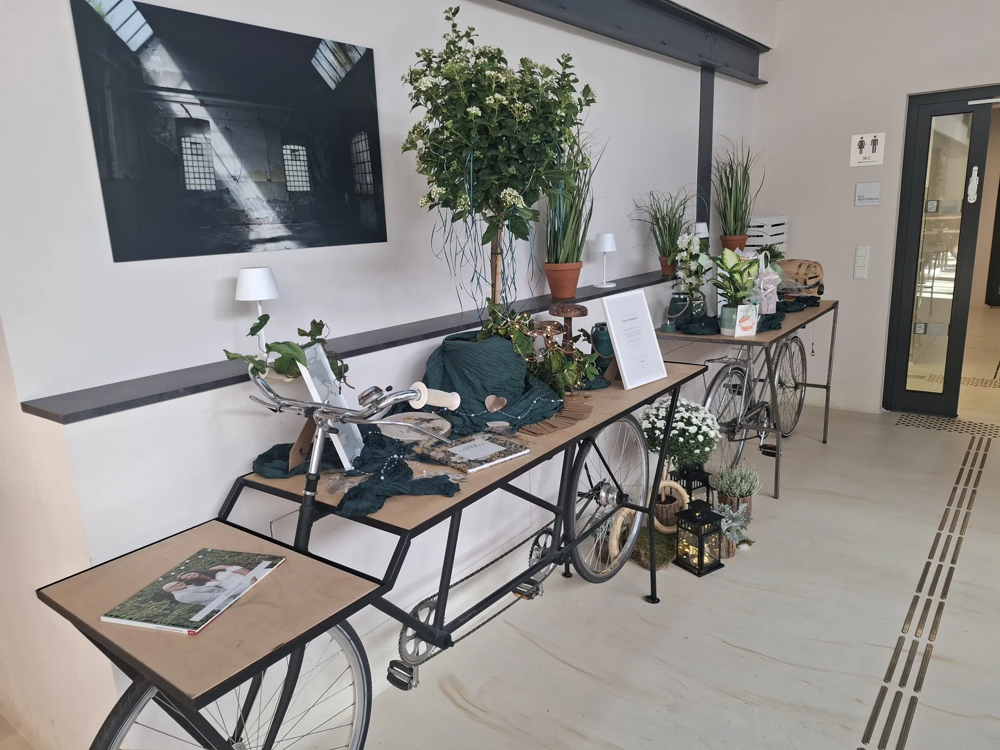
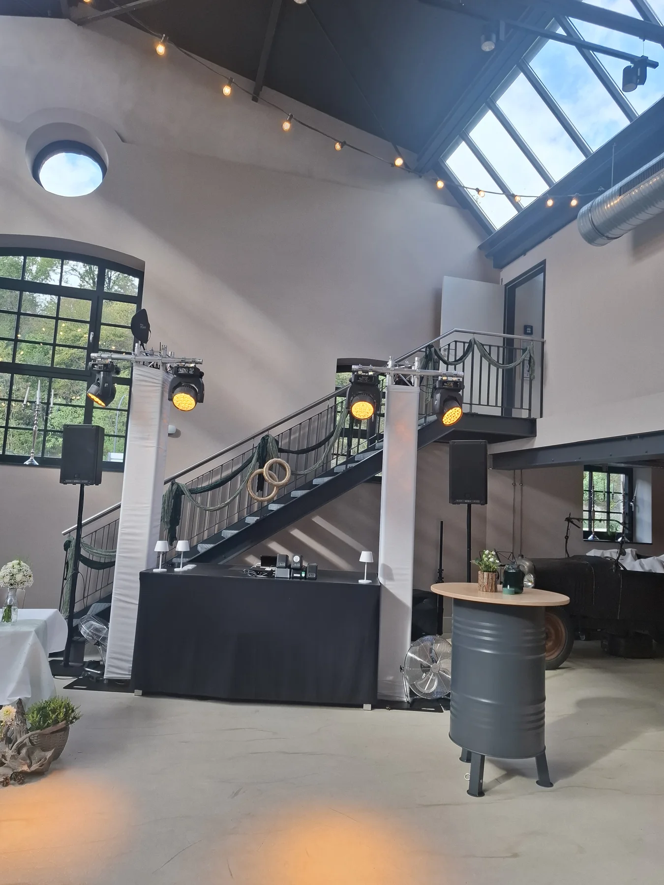
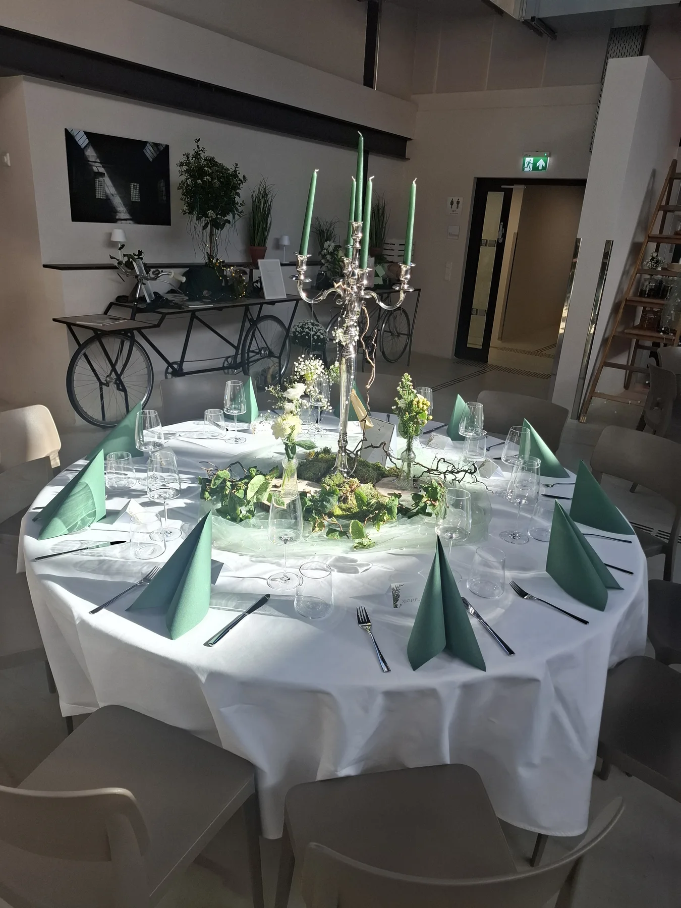

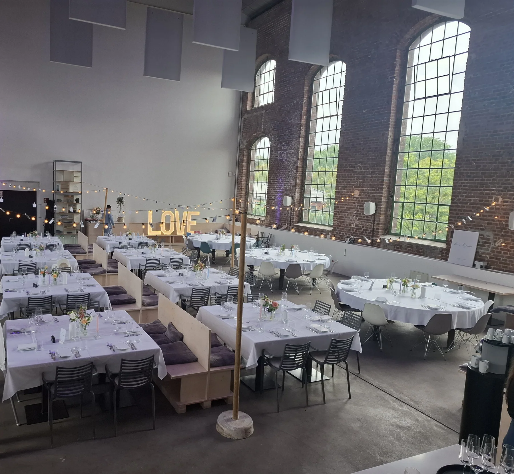
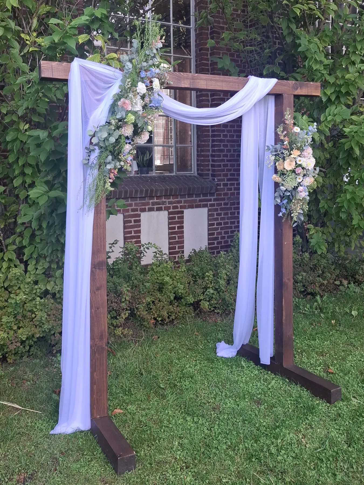
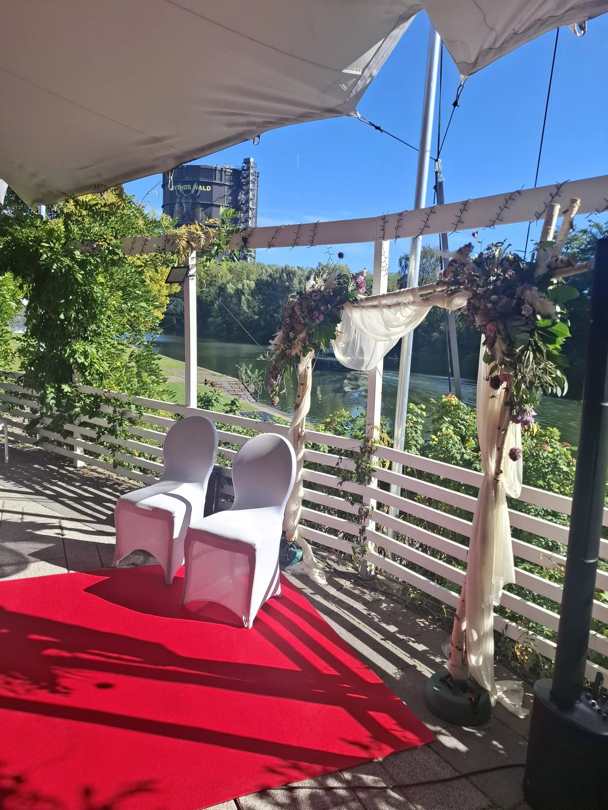
Und eure Geschichte?
Lasst uns etwas
Eigenes daraus machen.
Ihr plant einen besonderen Anlass? Ich freue mich darauf, euch kennenzulernen und mehr über eure Wünsche zu erfahren.
Unverbindlich anfragen ↗